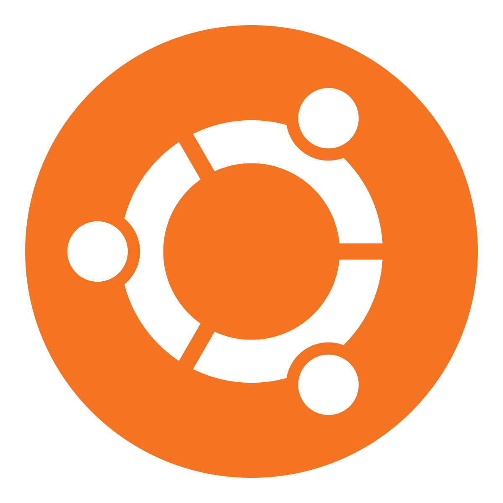

Debian

A stable, universal operating system
Debian is one of the oldest and most influential GNU/Linux distributions, known for its stability, security, and strict commitment to free software. It provides tens of thousands of packages through the APT package manager and serves as the foundation for many other distributions, including Ubuntu. Debian is suitable for servers, desktops, and embedded systems, offering long-term support and predictable release cycles.
 Download Debian
Documentation
Download Debian
Documentation
Arch Linux

Arch Linux is a lightweight, rolling-release distribution aimed at experienced users who want a highly customizable system. It follows the KISS (Keep It Simple, Stupid) philosophy, providing a minimal base install and letting you build exactly the system you need.
A typical Arch Linux setup is built from the ground up: you choose your own desktop environment or window manager, software stack, and configuration. This makes Arch ideal for users who enjoy learning how Linux works under the hood.
New to Linux? You may want to start with a more beginner-friendly distribution before moving to Arch. If you're already comfortable with the terminal and manual configuration, Arch offers unmatched flexibility and control.
Ubuntu
User-friendly and widely supported
Ubuntu is one of the most popular desktop Linux distributions, designed to be welcoming for beginners while remaining powerful enough for developers. It offers regular releases, long-term support (LTS) versions, and a polished GNOME desktop environment. With strong community and commercial backing, Ubuntu is a great starting point for most users.
 Download Ubuntu
Documentation
Download Ubuntu
Documentation
Linux Mint
Linux Mint is based on Ubuntu and focuses on providing a familiar desktop experience for users coming from Windows. Its Cinnamon desktop environment offers a traditional layout with menus, panels, and system tray icons, making it easy to navigate.

Mint includes sensible defaults, multimedia codecs out of the box, and user-friendly tools to manage updates, drivers, and system settings. It is a solid choice for everyday desktop use with minimal configuration required.
Fedora
Cutting-edge features with Red Hat backing
Fedora is a community-driven distribution sponsored by Red Hat, focused on delivering the latest open-source technologies. It is known for its frequent releases, strong security pr